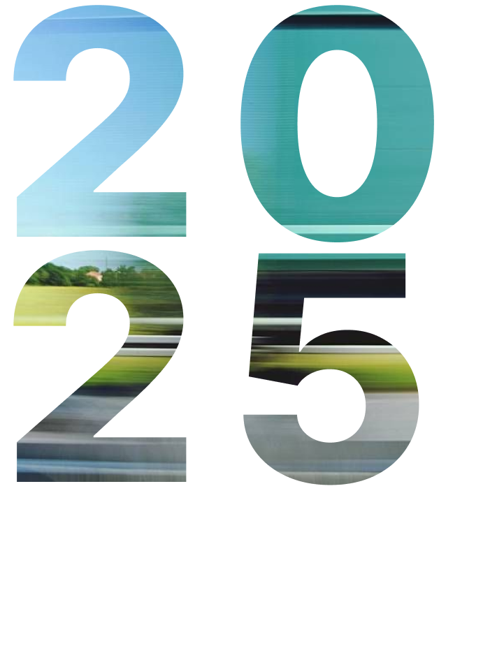

2025 IN
NUMBERS
- NGOs participating – 275
- Corporates participating – 165
- Corporate teams – 246
- Individuals signing up to raise funds – 1446
- Active fundraisers – 963
- Change Runners (fundraisers who raise over INR 1.75Lakh) – 203
Highest fundraising NGOs:
- Shrimad Rajchandra Love and Care - INR 13,67,39,437
- Light of Life Trust - INR 5,12,74,405
- United Way Mumbai - INR 4,74,09,382
- ADHAR - INR 2,36,83,068
- Isha Education - INR 1,88,55,820
